2026年，头部AI lab正在收敛到一个反直觉的想法：与其为Agent手写脆弱的奖励函数，不如直接把system prompt当成奖励函数来用。 励函数来用。
强化学习的内核很朴素：系统采取行动，环境给出奖励，Agent更新行为以长期最大化该奖励。交互按离散步推进，每一步三件事依次发生。
Agent观察环境状态S：足以决定下一步的信息，如下棋时的棋盘、对话模型中的历史上下文。Agent基于所见选择动作A，这是它影响环境的唯一手段，如棋局中的合法落子、LLM生成的回复。环境随后转移到新状态S'，并Emit一个标量奖励R。把这些步骤串起来就是一条轨迹（trajectory），RL的大部分工作就是从这些 (S, A, R, S') 转移中学习。 ') 转移中学习。

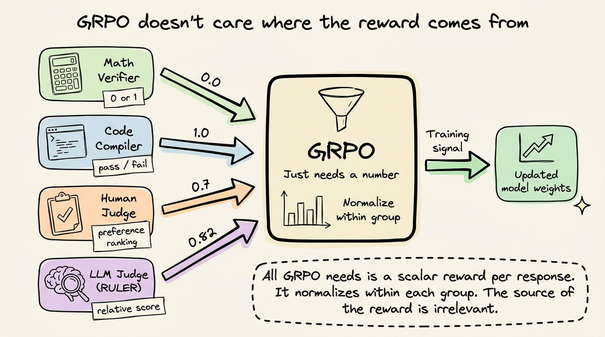
RL最初用到LLM上时，环境就是人类偏好。OpenAI的InstructGPT（2022）引出RLHF：人类给模型输出排序，这些排序训练出奖励模型，再用PPO基于奖励模型微调LLM。ChatGPT正是建立在这条流水线之上。 在这条流水线之上。
人类无法实时坐在训练循环里给每个输出打分。OpenAI把它拆成两阶段：离线阶段由人类标注一小批输出排序（一次性贵成本）；在线阶段用这些排序训练出奖励模型：一个能即时预测人类偏好的独立LLM，作为人类判断的压缩近似。奖励模型就位后，PPO才能以GPU速度跑真正的RL训练。 RL训练。
代价是PPO需同时在显存里驻留四套全尺寸模型：被训练的策略模型、防漂移的参考策略（KL惩罚）、打分的奖励模型、以及回答「这个奖励相对预期好不好」的critic。对7B模型，这意味着约28B参数同时驻留。 参数同时驻留。

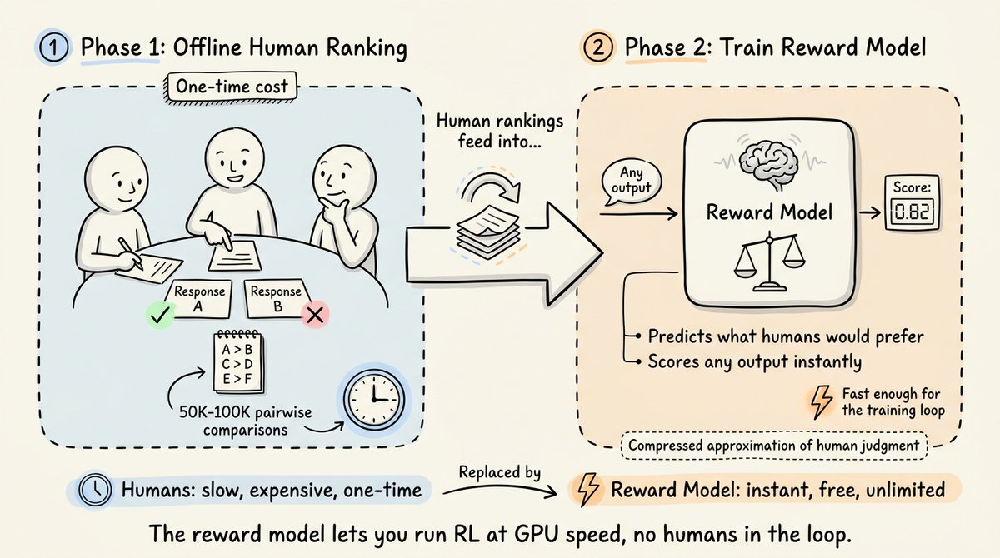
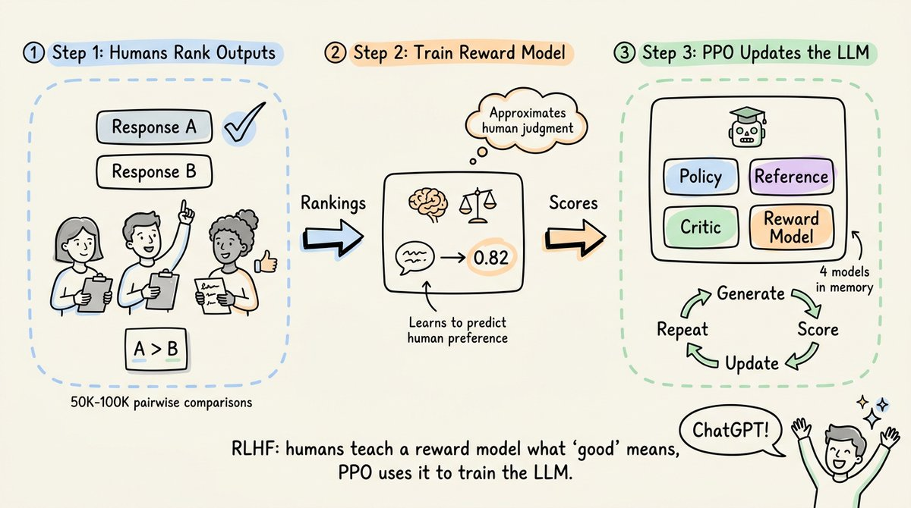
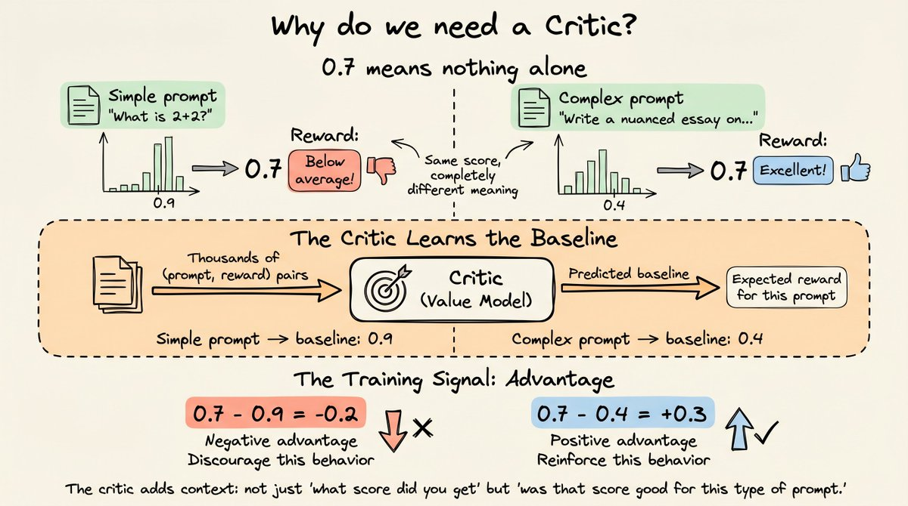
2025年1月，DeepSeek发布R1，奖励信号用了根本性不同的思路。它不训练人类偏好的奖励模型，而是采用RLVR（Reinforcement Learning with Verifiable Rewards）：用规则直接验证。 直接验证。
数学题由验证器核对答案是否匹配已知解；代码由编译器运行返回通过/失败。一切都是二元奖励：对得1，错得0。既然真值可用，就不需要人类排序，也不需要显式奖励模型。 。
优化器换成GRPO（Group Relative Policy Optimization），它拆掉了PPO的大部分基础设施。GRPO完全移除critic：不再训练独立模型预测每个提示的预期奖励，而是对同一提示生成多份回复（通常16份）并在组内归一化。16份里4份答对数学题，这4份拿正优势，其余12份拿负优势。这一步直接从显存里砍掉一整套全尺寸模型。 存里砍掉一整套全尺寸模型。
GRPO也顺带干掉了习得的奖励模型，因为RLVR的验证器直接负责打分。四模型PPO（策略+参考+critic+奖励模型）塌缩为两套：被训练的策略、以及做KL正则的参考副本。实践中有些实现把参考折进策略检查点，逼近单模型配置。 模型配置。
仅靠GRPO和可验证奖励（无任何监督微调），DeepSeek R1-Zero在AIME 2024数学题上从15.6% 提升到77.9%；加多数投票后达86.7%，追平OpenAI o1。模型从二元对错信号中自发学会了自检、反思和思维链推理：没人教它一步步推理，是RL训练循环发现「推理能抬高奖励」，它便学会了推理。 」，它便学会了推理。
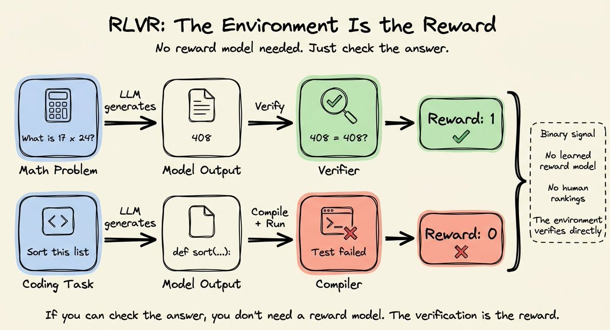

GRPO本身通用，它不在乎奖励来自数学验证器、代码编译器、人类还是Python脚本，它只要求每个回复有个数字、并在组内归一化。但清晰的瓶颈在于：这些数字从哪来。 来。
数学和代码没问题，环境给出确定性信号。但真实世界工具与数据交互的Agent不产生能跟标准答案做字符串匹配的输出。RAG Agent检索上下文生成回复，没有唯一正确答案可比对；客服Agent起草回复，没有编译器可跑；摘要Agent浓缩20页文档，好摘要与平庸摘要之间没有任何字符串验证器能区分。这类环境下，奖励不会像数学题那样自动递到你手上。 自动递到你手上。
当然，部分Agent任务确有可验证结果，RLVR照常有效：可验证性取决于任务结果，而非模型是否以Agent形态行动。但多数Agent工作流的结果是主观或多维的。 观或多维的。
一种解法是写自定义奖励函数，用Python按人工标准给每个输出打分。RAG奖励函数检查回复是否用了检索上下文（忠实度）、惩罚上下文外的幻觉、奖励完整性；工具调用奖励函数给多步任务的部分进展打分、惩罚多余API调用。每条准则返一个部分分，加总成最终奖励。 终奖励。
这能跑，但引入自己的问题。写好奖励函数要数天迭代：预判边界情况、校准各准则权重、测试它真在奖励你想要的行为。一个过度加权格式合规、轻视忠实度的奖励函数，会训出一个格式漂亮但满嘴幻觉的Agent。奖励函数还脆弱：改检索管线、加新工具、改system prompt，都得重写它。调试也麻烦：训练出坏行为时，病因可能是奖励函数、超参、数据或别的什么，而因为它是自定义代码，往往要等训完评估输出才能知道它到底在测什么。这正是RL在可验证任务（数学、代码、逻辑）广泛落地、却在Agent工作流（RAG、客服、工具调用、摘要）缺席的主因。 席的主因。

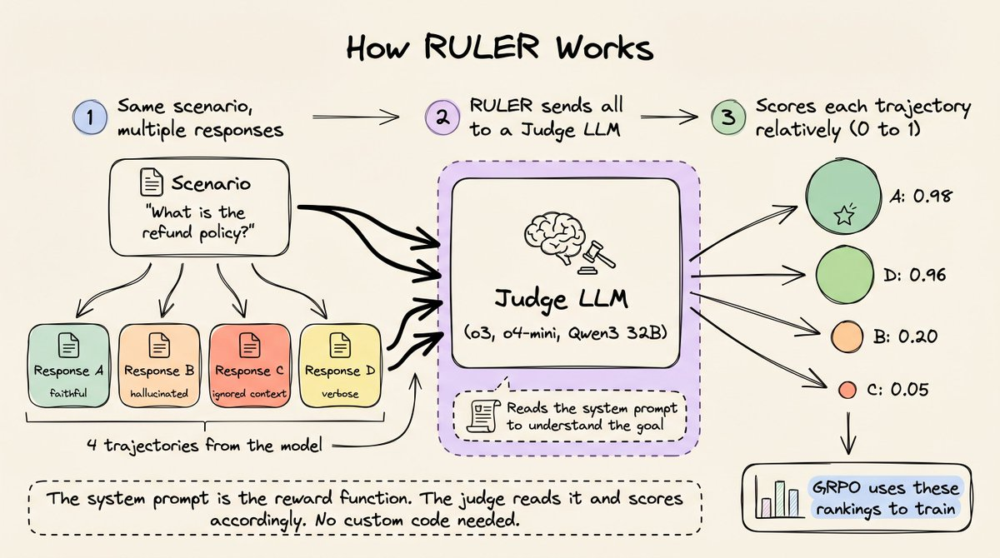
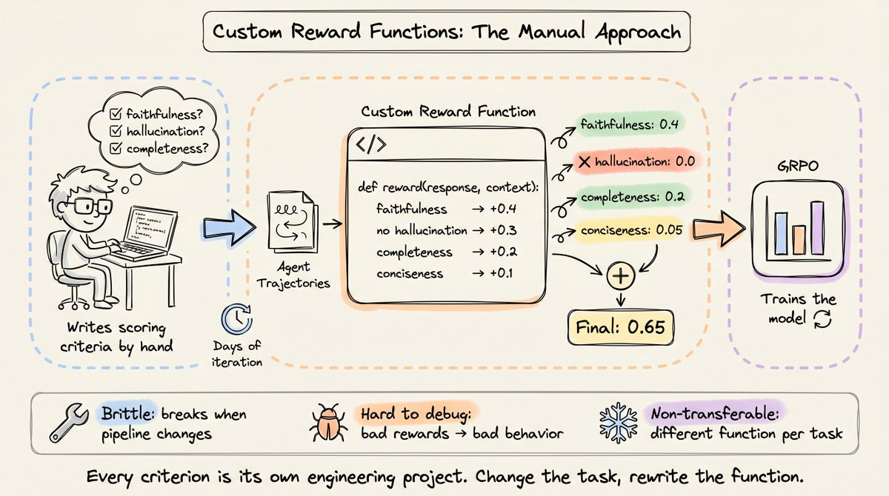
这不是只有开源圈在注意的缺口。主流AI lab正从不同方向收敛到同一个问题。 。
Anthropic证明了RL循环里根本不需要人类。其Constitutional AI表明：只要写下一套原则（一部「宪法」），AI就能对照这些原则评估输出，并为RL训练生成偏好数据。AI对照书面原则评判自己的输出，把这些判断当作RL信号：这是概念上的重大转向：一份规则文档取代了成army的人类评估员。 army的人类评估员。
OpenAI内部也在做类似的事，正在开发「Universal Verifiers」，把RL从数学和代码扩展到生物学、医学、通识等无法用简单字符串匹配核对的领域。细节未公开，但方向很清楚：我们需要跨任意领域通用的奖励信号，而不只是有确定性验证器的那些。 些。
Karpathy也在指这个方向。他2025年提出我们缺一个主要的LLM学习范式，暂称「system prompt learning」。核心论点是：system prompt携带比标量奖励更丰富的信号，RL训练应当想办法利用这个信号，而非仅靠手写奖励函数。 写奖励函数。
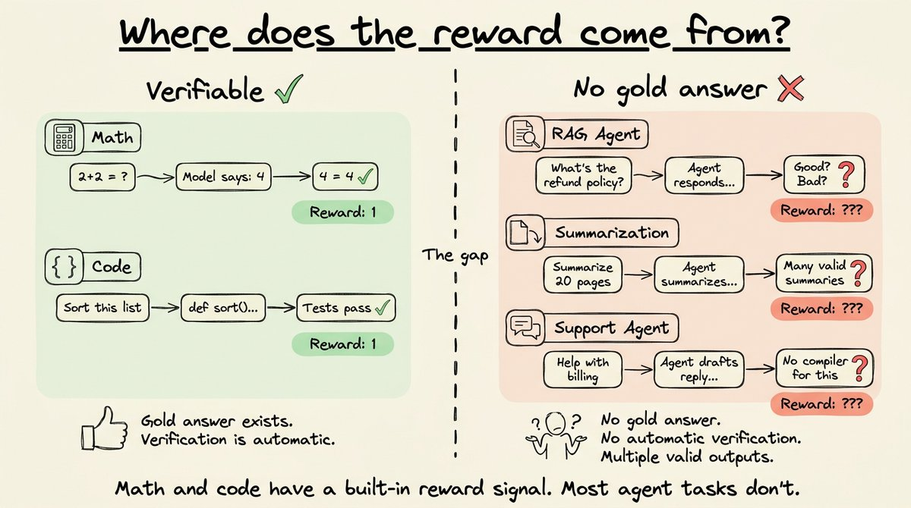
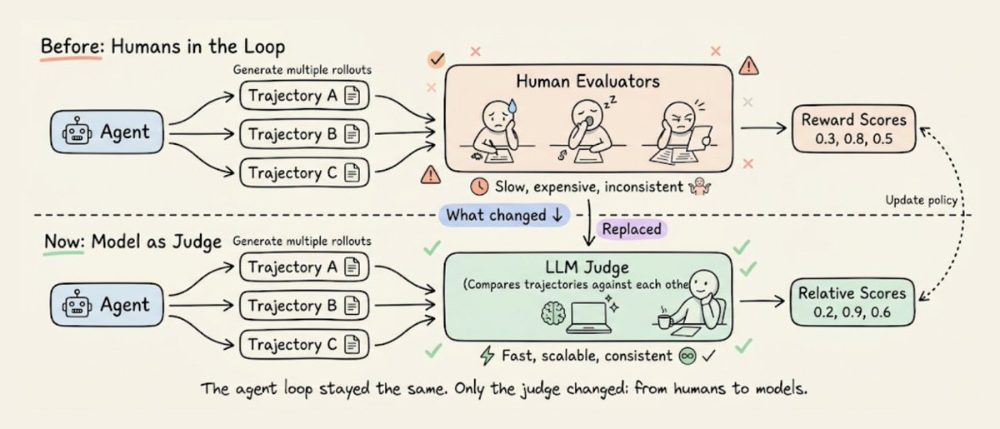


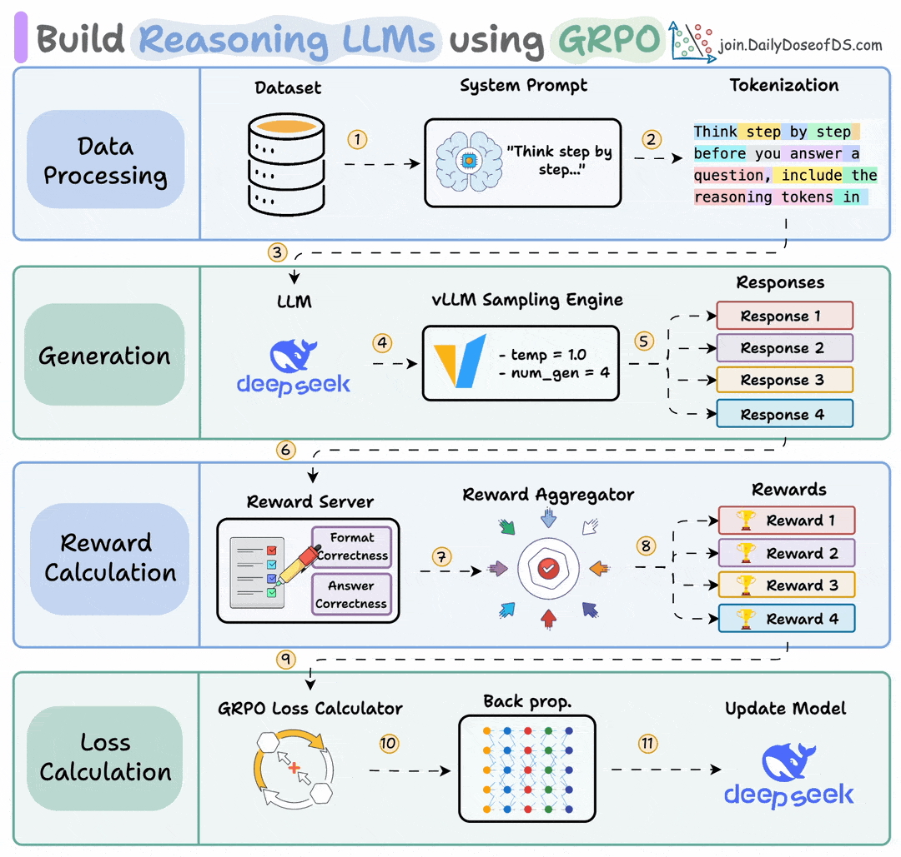
想看实践，RULER内置于OpenPipe的ART框架（开源，9k+ stars），是一个通用奖励函数，用一次函数调用替换掉上面所有自定义评分代码。它用LLM-as-judge对多条轨迹排名，利用的正是让GRPO强大的同一性质：只有相对排名才重要。 相对排名才重要。
逐步看它如何工作：每个训练步，你对同一场景生成N条轨迹（通常4到8）；RULER把全部N条发给裁判LLM（如o3、o4-mini、甚至本地Qwen3 32B）；裁判读Agent的system prompt理解它该做什么，再相对其他轨迹给每条打0到1的分。 其他轨迹给每条打0到1的分。 的分。
两个性质让它成立。其一，相对打分比绝对打分容易。LLM在绝对打分时因无共享校准而吃力，但「这4条回复里哪条最贴合system prompt的指示」是道比较题，LLM做得很稳。RULER把所有轨迹摆在一起让裁判互相排名。其二，GRPO本来就在组内归一化：最佳轨迹绝对分是0.9还是0.3无关紧要，GRPO取组内均值与标准差做归一化，训练信号来自相对排序。RULER的相对排名直接映射到GRPO期望的输入。 映射到GRPO期望的输入。 。
概念走查：训练RAG Agent时，每步GRPO对同一查询生成多份回复。传统做法要写奖励函数逐一打分，每个辅助函数（uses_context、has_hallucination、is_complete、is_concise）都是独立工程。用RULER，你把所有自定义代码换成一句：裁判LLM读system prompt（「只用检索上下文作答，不要添加上下文外的信息」），读全部四条回复并打分。system prompt已经隐式定义了忠实度、幻觉、完整性：裁判套用这些准则，而无需用Python实现它们。 thon实现它们。

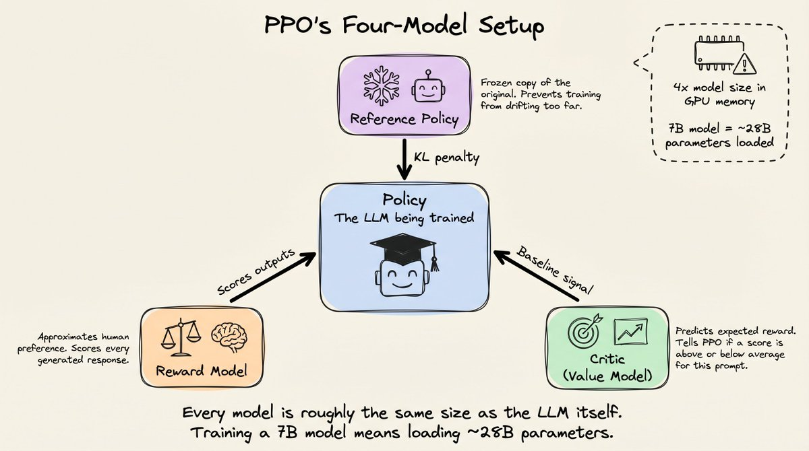
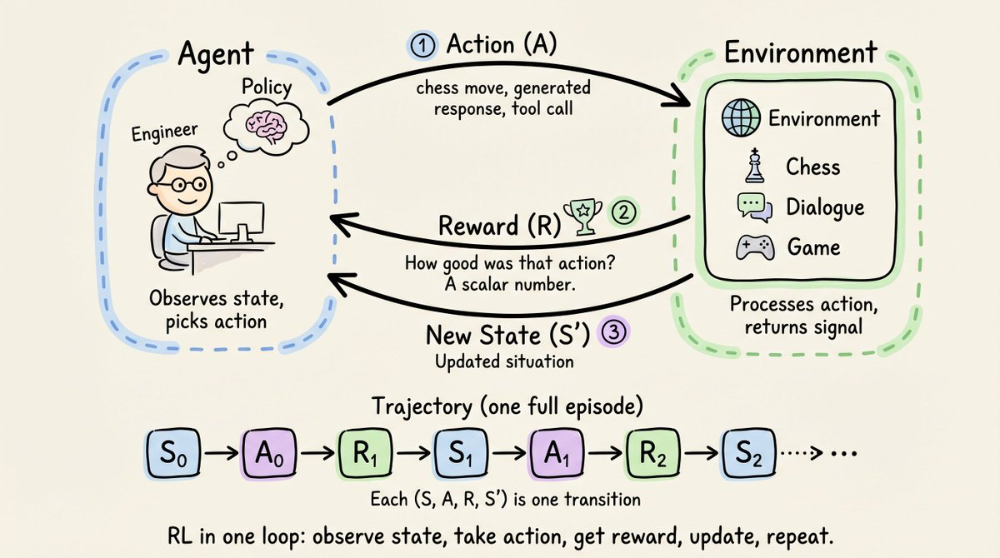

ART把每个Agent回复表示为Trajectory：打包了GRPO训练所需元数据的一组消息（system、user、assistant）。同一场景的多条轨迹构成一个TrajectoryGroup，这是RULER打分、GRPO训练的基本单位。reward=0.0是占位初始化，ruler_score_group返回后每条轨迹的reward字段被裁判分数更新。 rd字段被裁判分数更新。
RULER有两级API。底层ruler函数操作纯消息字典，无需ART特定对象，是看清水它实际行为的最快方式。高层ruler_score_group则处理向训练循环对象的转换，供真实流水线使用。 实流水线使用。
完整训练循环里，你用模型当前权重替换掉硬编码回复：ART的gather_trajectory_groups每场景用当前权重生成一组轨迹、用RULER排名、为GRPO收集结果。每步模型对每场景生成4份回复，RULER相对排名，GRPO强化高分行为、抑制低分行为。Agent在每次迭代中更擅长遵循system prompt的指示。多步之后，模型学会了打分高的模式（忠实、简洁、扎根上下文），忘掉打分低的模式（幻觉、无视上下文、啰嗦）。而且这段代码里没有任何地方定义过奖励函数。 有任何地方定义过奖励函数。

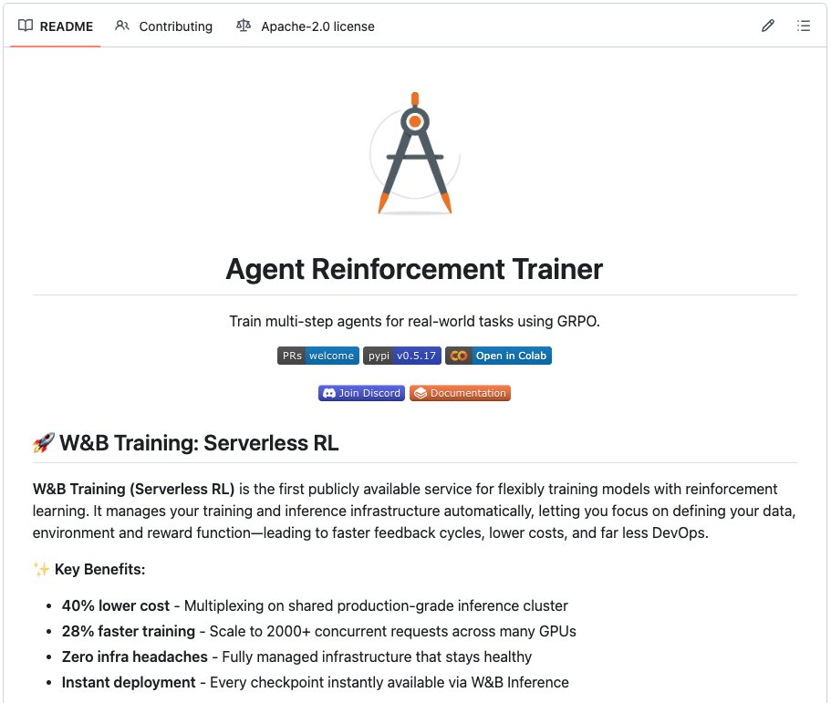
RULER是通用的，适用于任何任务。实际问题是它相对简单替代方案何时增值：纯确定性任务（SQL是否返回正确行）用二元验证器更便宜、信号更干净；纯主观任务（摘要好不好）RULER是唯一自动选项；介于两者之间的任务（Agent是否找到正确答案且解释得好）可以两者结合：RULER在独立指标下保留你rollout期间assign的奖励，让LLM裁判打分叠加在确定性验证之上，而不丢失任一信号。 ，而不丢失任一信号。
几条基于实战的经验：裁判不必用最贵的模型，Qwen3 32B这类便宜模型常够用，也可用Claude、Ollama本地模型或LiteLLM支持的任何模型，这是成本-质量的权衡而非硬要求。每组4到8条轨迹是推荐区间，少于4条裁判可比对的太少，多于8条会混淆裁判且成本不成正比。当组内所有轨迹共享同一system prompt与user消息时，RULER自动去重公共前缀，裁判只看一次共享上下文再加各异回复，对长system prompt或多轮对话显著省token。RULER把裁判响应缓存到磁盘，重跑同一轨迹不再打API：调试改system prompt或rubric时很关键。 stem prompt或rubric时很关键。 键。
把RL用在Agent上的瓶颈从来不是优化算法，GRPO处理得很好。一直是奖励信号。RLVR让环境直接给可验证任务打分而解决了那一类；RULER让LLM裁判相对打分，解决了每一类任务（可验证或不可验证）。完整实现在ART仓库，附带走通训练循环的Colab notebook。 b notebook。
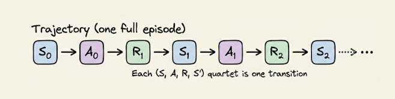
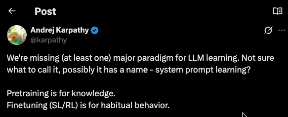


参考：https://x.com/_avichawla/status/2049037299334472015